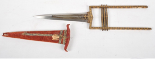

Audio Explanation / ऑडियो विवरण:
Audio for selected language is not available. Playing default audio.
LV-36: जमाधर (कटार)

लगभग 1710 ई. राजस्थान शैली का साइप्रस वृक्ष आकृति युक्त जमाधर
इस हथियार में दोधारी ब्लेड है, जिसका निचला भाग मोटा तथा एक उभरी हुई केंद्रीय मध्य-पट्टी से सुदृढ़ किया गया है। ब्लेड के ऊपरी भाग पर साइप्रस वृक्ष की आकृति को बारीकी से उकेरा गया है, जोइसे एक विशिष्ट सजावटी रूप प्रदान करती है। हत्थे पर सोने की जड़ाई का अत्यंत समृद्ध कार्य किया गया है, जिसमें जटिल पत्तियों के अलंकरण अंकित हैं। हत्थे को तीन क्षैतिज पट्टियों के रूप में बनाया गया है, जो इसके अलंकरण को और अधिक आकर्षक बनाती हैं। सामग्री: लोहा, इस्पात और लकड़ी, देश: भारत, प्राप्ति/पूर्व स्वामित्व: राजस्थान, उत्पत्ति-स्थान: राजस्थान, शैली/काल: उत्तर मुगल काल, लगभग: 1710 ईस्वी।
LV-36: Jamadhar (Push Dagger)
18th Century Rajasthani Push Dagger with Cypress Tree Motif
This weapon features a double-edged blade, thickened at the lower portion and reinforced with a prominent central mid-rib. The upper section of the blade is finely chiselled in the form of a cypress tree, adding a distinctive decorative element. The hilt is richly damascened in gold with intricate frond motifs and is designed with three horizontal bands, enhancing its ornamental appeal. Use of material: Iron, Steel and Wood; Country: India; Provenance: Rajasthan; Origin Place: Rajasthan; School: Late Mughal Period; c. 1710 A.D.
LV-36: జమాధార్ (కటారము)
1710 నాటి రాజస్థానీ శైలి జమాధార్ కటారము
ఈ ఆయుధం రెండు వైపులా పదును ఉన్న బ్లేడ్ కలిగి ఉంటుంది, దీని కింది భాగం మందంగా మరియు మధ్యలో ఉబ్బెత్తుగా ఉంటుంది. బ్లేడ్ పైభాగంలో సైప్రస్ వృక్షపు ఆకృతి సన్నని చెక్కడంతో చెక్కబడింది. పిడిపై బంగారంతో లతల ఆకృతులు అలంకరించబడ్డాయి. ఇనుము, ఉక్కు మరియు కలపతో తయారు చేయబడిన ఈ చారిత్రక ఆయుధం రాజస్థాన్ నుండి లభించింది (సుమారు 1710 CE).
LV-36: ஜமாதார் (கத்தார்)
1710 ஆம் ஆண்டு ராஜஸ்தானி பாணி ஜமாதார் கத்தார்
இந்த ஆயுதத்தின் கத்தி இருபுறமும் கூர்மையானது, இதன் கீழ் பகுதி தடிமனாகவும் நடுவில் உயர்த்தப்பட்ட கோட்டினாலும் வலுப்படுத்தப்பட்டுள்ளது. கத்தியின் மேல் பகுதியில் சைப்ரஸ் மரத்தின் வடிவம் நுணுக்கமாக செதுக்கப்பட்டுள்ளது. கைப்பிடியில் தங்கத்தால் இலை வடிவங்கள் அலங்கரிக்கப்பட்டுள்ளன. இரும்பு, எஃகு மற்றும் மரத்தால் செய்யப்பட்ட இந்த வரலாற்று சிறப்புமிக்க ஆயுதம் ராஜஸ்தானைச் சேர்ந்தது, பிந்தைய முகலாய காலம் (சுமார் 1710 CE).
LV-36: जमधर
१७१० काळातील राजस्थानी जमधर कटार
या शस्त्राला दुधारी पाते आहे, जे खालच्या भागात जाडसर असून मध्यभागी असलेल्या एका ठळक मध्य-कण्याने मजबूत केले आहे. पात्याचा वरचा भाग सरूच्या झाडाच्या आकारात सुबकपणे कोरलेला आहे, ज्यामुळे एक वेगळेच सजावटीचे वैशिष्ट्य जोडले जाते. मुठीवर गुंतागुंतीच्या पानांच्या नक्षीसह समृद्ध सोनेरी जडीकाम केले आहे आणि तिची रचना तीन आडव्या पट्ट्यांसह केली आहे, ज्यामुळे तिचे सजावटीचे सौंदर्य वाढते.
वापरलेले साहित्य: लोखंड, स्टिल आणि लाकूड; देश: भारत; उद्गम: राजस्थान; निर्मितीचे ठिकाण: राजस्थान; शाळा: उत्तर मुघल काळ, अंदाजे इ.स. 1710.
वापरलेले साहित्य: लोखंड, स्टिल आणि लाकूड; देश: भारत; उद्गम: राजस्थान; निर्मितीचे ठिकाण: राजस्थान; शाळा: उत्तर मुघल काळ, अंदाजे इ.स. 1710.
LV-36: ജമാധാർ കട്ടാരി
1710 കാലഘട്ടത്തിലെ രാജസ്ഥാനി ജമാധാർ കട്ടാരി
ഈ ആയുധത്തിന് ഇരുവശത്തും മൂർച്ചയുള്ള ബ്ലേഡാണുള്ളത്, ഇതിന്റെ താഴ്ഭാഗം കട്ടിയുള്ളതും മധ്യഭാഗം ഉയർന്നു നിൽക്കുന്നതുമാണ്. ബ്ലേഡിന്റെ മുകൾഭാഗത്ത് സൈപ്രസ് മരത്തിന്റെ രൂപം സൂക്ഷ്മമായി കൊത്തിവെച്ചിരിക്കുന്നു. ഇതിന്റെ പിടിയിൽ സ്വർണ്ണത്തിൽ ഇലകളുടെ സങ്കീർണ്ണമായ അലങ്കാരപ്പണികൾ ചെയ്തിട്ടുണ്ട്. മൂന്ന് തിരശ്ചീന വളയങ്ങളുള്ള ഇതിന്റെ നിർമ്മിതി ആയുധത്തിന്റെ ഭംഗി വർദ്ധിപ്പിക്കുന്നു. ഇരുമ്പ്, ഉരുക്ക്, തടി എന്നിവ ഉപയോഗിച്ച് നിർമ്മിച്ച ഈ ചരിത്രപ്രസിദ്ധമായ ആയുധം രാജസ്ഥാനിൽ നിന്നുള്ളതും ഉത്തരോത്തര മുഗൾ കാലഘട്ടത്തിലെ (ഏകദേശം 1710 CE) കലയുടെ മികച്ച ഉദാഹരണവുമാണ്.
LV-36: ಜಮಾಧಾರ್ ಕಟಾರಿ
1710 ರ ರಾಜಸ್ಥಾನಿ ಜಮಾಧಾರ್ ಕಟಾರಿ
ಈ ಆಯುಧವು ಎರಡೂ ಬದಿಗಳಲ್ಲಿ ಹರಿತವಾದ ಬ್ಲೇಡ್ ಅನ್ನು ಹೊಂದಿದೆ, ಇದರ ಕೆಳಗಿನ ಭಾಗವು ದಪ್ಪವಾಗಿರುತ್ತದೆ. ಬ್ಲೇಡ್ನ ಮೇಲ್ಭಾಗದಲ್ಲಿ ಸೈಪ್ರಸ್ ಮರದ ಆಕೃತಿಯನ್ನು ಕೆತ್ತಲಾಗಿದೆ. ಹಿಡಿಕೆಯಲ್ಲಿ ಚಿನ್ನದ ಬಳ್ಳಿಗಳ ಅಲಂಕಾರವಿದೆ. ಕಬ್ಬಿಣ, ಉಕ್ಕು ಮತ್ತು ಮರದಿಂದ ತಯಾರಿಸಿದ ಈ ಐತಿಹಾಸಿಕ ಆಯುಧವು ರಾಜಸ್ಥಾನದ್ದಾಗಿದೆ (ಸುಮಾರು 1710 CE).
LV-36: ଜମାଧର (କଟାର)
୧୭୧୦ ଖ୍ରୀଷ୍ଟାବ୍ଦର ରାଜସ୍ଥାନୀ ଜମାଧର କଟାର
'ଜମଧର' ନାମକ ଏହି ଅସ୍ତ୍ରରେ ଏକ ଦ୍ୱିଧାର ପାତ ରହିଛି, ଯାହାର ତଳ ଅଂଶଟି ମୋଟା ଏବଂ ମଧ୍ୟଭାଗରେ ଏକ ପ୍ରମୁଖ ଉନ୍ନତ ଶିରା ଦ୍ୱାରା ଅଧିକ ସୁଦୃଢ଼। ପାତର ଉପରିଭାଗରେ ସାଇପ୍ରସ୍ ବୃକ୍ଷ ଆକୃତିର ସୂକ୍ଷ୍ମ ଖୋଦେଇ କରାଯାଇ ଏକ ସ୍ୱତନ୍ତ୍ର ଆକର୍ଷଣ ପ୍ରଦାନ କରାଯାଇଛି। ଏହାର ମୁଠାଟି ସୂକ୍ଷ୍ମ ପତ୍ର-ଚିତ୍ର ସହ ସ୍ୱର୍ଣ୍ଣ-ଖୋଚିତ କାରୁକାର୍ଯ୍ୟରେ ସୁଶୋଭିତ ଏବଂ ଏଥିରେ ତିନୋଟି ସମାନ୍ତରାଳ ପଟ୍ଟ ରହିଛି, ଯାହା ଏହାର କଳାତ୍ମକ ଶୋଭାକୁ ବୃଦ୍ଧି କରିଥାଏ। ଲୁହା, ଇସ୍ପାତ ଏବଂ କାଠରେ ନିର୍ମିତ ତଥା ରାଜସ୍ଥାନର ମୋଗଲ କଳା ଶୈଳୀର ଏହି ଅସ୍ତ୍ରଟି ପରବର୍ତ୍ତୀ ମୋଗଲ ଯୁଗର, ପ୍ରାୟ ୧୭୧୦ ଖ୍ରୀଷ୍ଟାବ୍ଦର।
LV-36: জামধার
১৭১০ খ্রিষ্টাব্দের রাজস্থানি জামধার কাটার
এই অস্ত্রটির ফলাটি দ্বিধারবিশিষ্ট। ফলার নিম্নাংশ অপেক্ষাকৃত পুরু এবং একটি সুস্পষ্ট কেন্দ্রীয় মধ্যশিরা দ্বারা শক্তিশালী করা হয়েছে। ফলার ঊর্ধ্বাংশে সূক্ষ্ম খোদাইয়ের মাধ্যমে সাইপ্রেস বৃক্ষের আকৃতি ফুটিয়ে তোলা হয়েছে, যা অস্ত্রটির অলংকারিক বৈশিষ্ট্যকে স্বতন্ত্র মাত্রা দিয়েছে। হাতলটিতে অত্যন্ত সূক্ষ্ম লতাপাতার নকশায় সমৃদ্ধ সোনার ড্যামাসিন কারুকাজ করা হয়েছে। এর গঠনটি তিনটি অনুভূমিক বলয়ে বিভক্ত, যা অস্ত্রটির সৌন্দর্য ও অলংকারিক আকর্ষণকে আরও বহুগুণ বাড়িয়ে তুলেছে। ঐতিহাসিক এই নিদর্শনটি নির্মাণে মূলত লোহা, ইস্পাত এবং কাঠ ব্যবহার করা হয়েছে। অস্ত্রটির উৎপত্তিস্থল ভারতের রাজস্থান, উত্তর মুঘল যুগ, আনুমানিক ১৭১০ খ্রিস্টাব্দ।
LV-36: جمادار
1710ء کا راجستھانی جمادار خنجر
اس ہتھیار کا پھل دو دھاری ہے۔ نچلے حصے میں یہ نسبتاً موٹا ہے اور درمیان میں ابھری ہوئی مرکزی دھار سے اسے مضبوط بنایا گیا ہے۔ پھل کے اوپری حصے کو صنوبر کے درخت کی شکل میں باریک تراشا گیا ہے، جو اس میں ایک منفرد سجاوٹی عنصر کا اضافہ کرتا ہے۔ دستے کو پتوں کے باریک نقش سے سونے کے کام سے بھرپور انداز میں سجایا گیا ہے۔ اس پر تین افقی پٹیاں بھی بنائی گئی ہیں، جو اس کی سجاوٹ میں مزید حسن پیدا کرتی ہیں۔
مواد: لوہا، فولاد اور لکڑی ملک: ہندوستان اصل مقام: راجستھان فن کا مکتب: راجستھان دور: مغلیہ سلطنت کا آخری دور زمانہ: تقریباً سترہ سو دس عیسوی
مواد: لوہا، فولاد اور لکڑی ملک: ہندوستان اصل مقام: راجستھان فن کا مکتب: راجستھان دور: مغلیہ سلطنت کا آخری دور زمانہ: تقریباً سترہ سو دس عیسوی
LV-36: જમાધર (કટાર)
આશરે ૧૭૧૦ ઇ.સ. ની રાજસ્થાની જમાધર કટાર
આ શસ્ત્રમાં બે ધારવાળી બ્લેડ છે, જેનો નીચેનો ભાગ જાડો અને મધ્યમાં ઉપસેલો છે. બ્લેડના ઉપરના ભાગ પર સાયપ્રસ વૃક્ષની આકૃતિ કંડારેલી છે. હાથા પર સોનાનું અત્યંત સમૃદ્ધ કામ કરવામાં આવ્યું છે. સામગ્રી: લોખંડ, સ્ટીલ અને લાકડું, દેશ: ભારત, સ્થાન: રાજસ્થાન, ઉત્તર મુઘલ કાળ (આશરે ૧૭૧૦ ઇ.સ.).